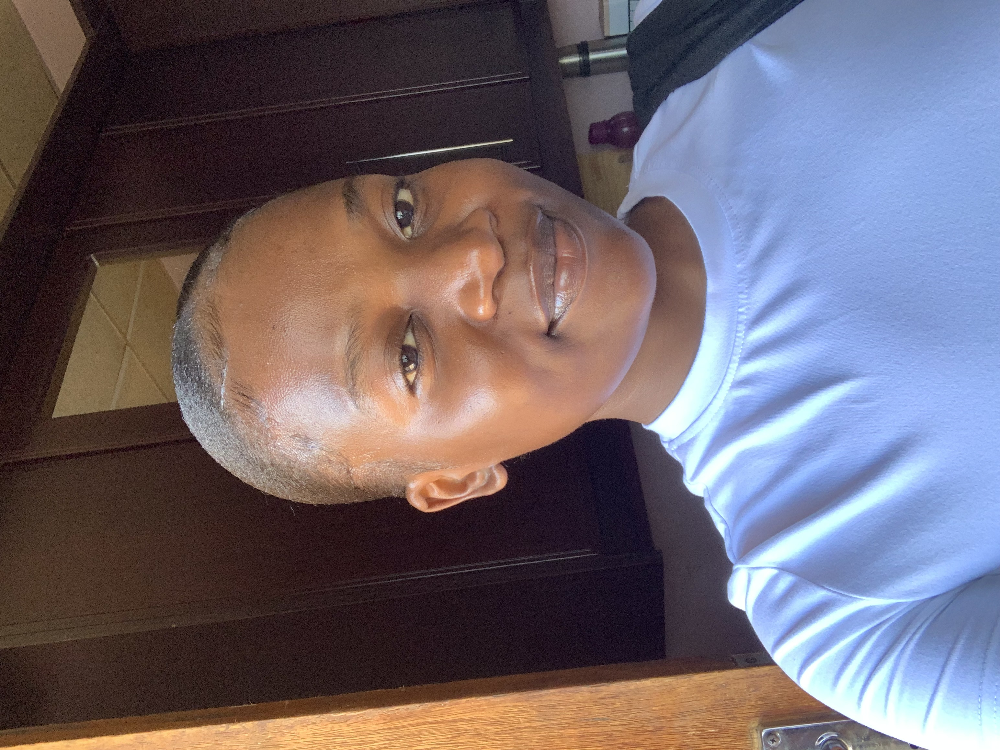

Hi, my name is
Zwavhudi Nengalavhani
I am a web developer with a growing passion for front-end development.
Welcome to my portfolio website.

I am a web developer with a growing passion for front-end development.
Welcome to my portfolio website.
I am Zwavhudi Nengalavhani, a passionate web developer, who's a curious and committed learner with a degree in Indigenous Knowledge Systems and a growing interest in coding and design. I've worked on various projects like an AI Crochet Pattern Generator web-app. I'm looking forward to making technology more inclusive and accessible. I completed a short course with SheCodes Workshop for women(4 months), where I have gained skills in HTML, CSS, JavaScript. I also completed another short course with FNB App Academy(3 months) where I gained the same skills plus Python. I am currently expandibg my knowledge on the skills I've gained with Power Learn Project Africa In my spare time, I'm usually researching more about tech, crocheting garments and watching KDramas.